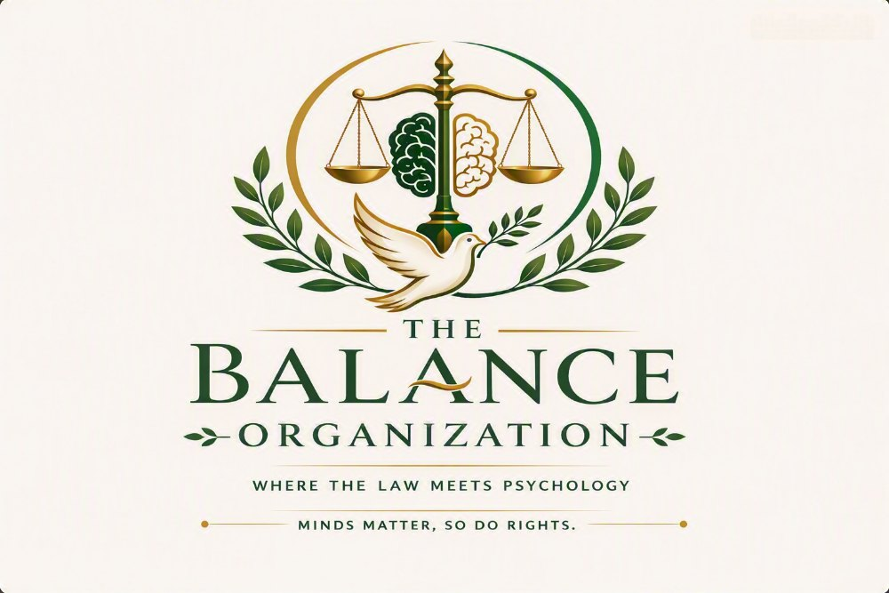

An Ethiopian non-governmental, non-profit organization where the law meets psychology
The Balance Organization is based in Addis Ababa. We are the first centre in Ethiopia to fully integrate human rights protection with mental health advocacy, completely free of charge.
Both, at the same time, from the same team
Most services in Ethiopia offer one or the other. We offer both, at the same time, from the same team. A lawyer and a psychologist plan every case together, to offer you a quality of life where your rights are respected and your peace of mind is served.
A right you cannot feel is not a right. A freedom you cannot enjoy is not freedom.

Our vision
Mental health is a human right. The Balance Organization envisions an Ethiopia where the law and the mind work together to restore human dignity and strengthen families, so that people can live healthy lives.
We believe that when a person is safe, the family is safe. As families thrive, society and the country are protected too.
Our mission
To provide integrated legal and psychological services that protect the human rights of people facing all forms of human rights violations, giving free, integrated, professional services to vulnerable populations.
What we are working toward
-
Mental health is a human right
To promote understanding that mental health is a human right, and that psychological wellbeing is essential to justice.
-
Legal and psychological services together
To provide legal and psychological services together, ensuring that no client receives one alone.
-
Defend rights and advocate for change
To defend against human rights violations affecting individuals, families, society, and the country, and to advocate for systemic change within the framework of Ethiopian and international human rights law.
-
Train professionals
To train legal and psychological professionals in trauma-informed, human rights-based practice.
-
Reach people where they are
To provide home-based therapy and legal aid for those unable to travel, prison-based services for incarcerated persons, and hotline services for people living outside Addis Ababa.
How we work
Dignity first
You are a person with rights, not a case file. We speak plainly, listen carefully, and never rush you.
Confidential
What you tell us stays with us. We share nothing without your permission, unless the law requires it to keep a child or a life safe.
Trauma-informed
We understand how stress and trauma affect memory, decisions, and trust. Our whole team is trained to work with that in mind.
Rights-based
Our work rests on the Ethiopian Constitution and the human rights standards Ethiopia has committed to.
Free of charge
We never ask the people we help to pay. Not for a consultation, not for a court filing, not for a therapy session.
Honest about limits
We do not promise outcomes. We promise to stay beside you, tell you the truth, and do our best work.
One team, two professions
Do you need help?
If any of this sounds like your situation, contact us. It is free and confidential.
Get Help